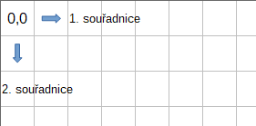
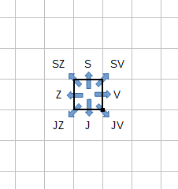

Vlajka
Koeficient 1
Od roku 1920 používá Česká republika (ČR, dříve ČSR, ČSSR, ČSFR) vlajku jak jí známe,
tedy:

Vaším úkolem je tuto vlajku nakresit pomocí vašeho programu:
- Vykreslete nejprve bílý obdelník o velikosti 600 x 400 bodů (šířka x výška).
- Do jeho spodní části vykreslete červenou výseč tak, aby šikmá čára začínala na souřadnicích
[0,0] a končila [200,200] a dále pokračovala rovná čára do pozice [600,200]. Souřadnice
[0,0] jsou vlevo dole.
- Do levé části nakreslete modrou výseč, kde šikmé čáry jsou z bodu [0,1] do [200,201]
a z [200,201] do [0,400].
- Umožněte uživateli pozorovat vykreslení jednotlivých částí vlajky – po stisku klávesy
ENTER se vykreslí vždy jedna další část vlajky.
- Umožněte uživateli měnit velikost vlajky v rozmezí 600×400 až 1200×800 bodů s krokem
po 50 bodech. Vlajka musí mít vždy poměr stran 3:2.
Hodnocení
| Body |
Za co |
| 2 |
Program nakreslí vlajku o velikosti 600x400 bodů |
| 1 |
Program umožní pozorovat vykreslení jednotlivých kusů vlajky - po stisku ENTER se
zobrazí první díl vlajky
|
| 1 |
Program umožní pozorovat vykreslení jednotlivých kusů vlajky - po stisku ENTER se
zobrazí druhý díl vlajky
|
| 1 |
Program umožní pozorovat vykreslení jednotlivých kusů vlajky - po stisku ENTER se
zobrazí třetí díl vlajky a vlajka je celá
|
| 1 |
Program umožní měnit velikost vlajky - vyberte velikost 900 x 600, vlajka se vykreslí |
| 1 |
Program umožní měnit velikost vlajky - vyberte velikost 1050 x 700, vlajka se vykreslí |
| 1 |
Program umožní měnit velikost vlajky - vyberte velikost 1200 x 800, vlajka se vykreslí |
| 0,5 |
Program umožní měnit velikost vlajky - zkuste vybrat velikost 1020 x 680, program
zadání odmítne (neumožní) protože krok není 50
|
| 0,5 |
Program umožní měnit velikost vlajky - zkuste vybrat velikost 1000 x 700, program
zadání odmítne (neumožní) protože poměr není 3:2
|
| 1 |
Dokumentace, efektivita, atd. |
Zkoušení
Koeficient 1
Vytvořte program na zkoušení těchto matematických operací: sčítání,
odčítání, násobení a dělení.
Všechna čísla včetně výsledku budou celá v intervalu -99 až
99. Tzn. že u dělení musí být čísla navržena tak, že dělení bude bez
zbytku. Navrhněte příklady tak, aby čísla příkladů pokryla celý
interval -99 až 99. Tzn., že by měl být aspoň jeden příklad, který
bude mít jeden z argumentů nebo výsledek v intervalu -99 až -90 nebo
90 až 99.
Program vygeneruje zadaný počet příkladů, které uživatel spočítá a
vloží. Nakonec program zobrazí výsledek zkoušení: celkový počet
příkladů, počet správných a špatných odpovědí, procentuální úspěšnost
zaokrouhlenou na jedno desetinné místo a vypíše chybně vypočítané
přiklady.
Program je možno napsat jako:
- konzolovou aplikaci, kde vstupní parametry jsou:
- seznam testovaných operací vyjádřený znaky: "+" sčítání, "-" odčítání, "*" násobení,
"/" dělení
- počet příkladů
- aplikaci s grafickým uživatelským rozhraním, ve kterém se zadají výše uvedené parametry
V obou případech nezapomeňte na stručnou nápovědu – co program dělá a
popis parametrů (u konzolové aplikace použijte na vyvolání nápovědy "/?" ).
Ukázka zadání:
Vstup 1: +-*/
Vstup 2: 10
Ukázka vygenerovaných příkladů a vstupu uživatele:
| 1. |
55 |
+ |
5 |
= |
60 |
ok |
| 2. |
4 |
+ |
9 |
= |
13 |
ok |
| 3. |
5 |
* |
5 |
= |
27 |
chyba |
| 4. |
45 |
/ |
9 |
= |
5 |
ok |
| 5. |
44 |
- |
55 |
= |
-11 |
ok |
| 6. |
-99 |
/ |
3 |
= |
-33 |
ok |
| 7. |
-6 |
* |
8 |
= |
-48 |
ok |
| 8. |
7 |
* |
8 |
= |
56 |
ok |
| 9. |
0 |
+ |
99 |
= |
99 |
ok |
| 10. |
16 |
/ |
-2 |
= |
-8 |
ok |
Ukázka výsledku:
Celkem: 10
Správně: 9
Chybně: 1
Úspěšnost: 90.0%
Chybné příklady:
5 * 5 = 27 správně 25
Hodnocení
| Body |
Za co |
| 0.5 |
Program lze spustit a lze zadat vstupy (parametrem / pomocí GUI) |
| 0.5 |
Kontrola na vstupy - Vstup 1 - nahlásí chybný parametr, popř. stačí ignorovat chybný
parametr
v GUI nedovolí zadat jiné hodnoty než, které jsou povolené.
|
| 0.5 |
Kontrola na vstupy - Vstup 2 - kontrola na numerickou hodnotu počtu zkoušení
v GUI nedovolí zadat jiné hodnoty než, které jsou povolené.
|
| 1 |
Program navrhne příklady - se správným počtem příkladů |
| 1 |
Program navrhne příklady - ve správných mezích (-99 až 99), včetně výsledků |
| 1 |
Program navrhne příklady - aspoň jeden příklad s argumenty nebo s výsledkem v intevalu
(-99 až 99) nebo (-0 až 99)
|
| 1 |
Příklady obsahují všechny specifikované matematické operace |
| 1 |
Program umožní vložit (zadat) výsledky |
| 1 |
Program kontroluje vstup numerických hodnot |
| 1 |
Program správně vyhodnotí test |
| 0.5 |
Program vypíše chybné příklady se správným výsledkem |
| 0.5 |
Dokumentace - zdrojový text vykazuje známky komentářů, názvy proměnných indikují jejich
význam
|
| 0.5 |
Dokumentace - program obsahuje stručný popis funkce programu a popis vstupních parametrů
|
Analýza TV logu
Koeficient 2
V souboru tvlog/tvlog.csv najdete část logů z testovacího serveru jednoho malého IPTV operátora. Jde o CSV
soubor, ze kterého lze vyčíst, který zakazník se kdy díval na jaký televizní kanál.
Vaším úkolem je napsat program, který bude z tohoto logu zjišťovat statistické údaje
vždy pro jeden konkrétní vybraný měsíc. Po spuštení uživatel vybere vstupní soubor.
Dále zvolí, pro který měsíc statistiku požaduje a vybere, jakou statistiku si přeje
zobrazit.
Program musí umět pro vybraný měsíc zobrazit následující statistiky:
- Součet „prosledovaných“ časů pro jednotlivé kanály (součet časů všech diváků po jednotlivých
kanálech). Zobrazení TV kanálů a příslušných časů seřadte sestupně podle časů, čas
bude zobrazen ve formátu dny.hodiny:minuty:sekundy.
- Počet unikátních diváků pro jednotlivé kanály (pro všechny kanály, kolik různých zákazníků
se na daný kanál dívalo alespoň jednu sekundu), seřadit dle počtu diváků sestupně.
- Kdy byl server pod maximální zátěží. Měsíc rozdělíme na pětiminutové intervaly, u každého
intervalu spočítáme, kolik v daném období bylo aktivních diváků (dívalo se alespoň
část intervalu; přesněji – kolik řádek logu zasahuje do daného intervalu; uvažujte
pouze řádky začínající ve vybraném měsíci). Výsledky seřadíme sestupně podle počtu
diváků, zobrazíme 20 prvních položek (časový interval a počet diváků).
Očekáváme, že program bude napsán dle zvyklostí obvyklých pro použité prostředí –
u konzolových aplikací předpokládáme vstupy na příkazové řádce, u grafických prostředí
je vhodné použít pro zadávání vstupů a zobrazní výstupů příslušné komponenty daného
prostředí.
Poznámky:
- Neočekávejte, že bude log jakkoliv seřazený – počítáme s tím, že jej vždy projdete
celý.
- Jeden zákazník může ve stejném čase sledovat dva různé programy (i více) na různých
zařízeních.
- Jeden zákazník může ve stejném čase sledovat jeden stejný program na různých zařízeních.
- Server, z něhož logy pocházejí, některé měsíce některé TV kanály nevysílal, tedy není
chyba, že nejsou zalogovány.
- Bude stačit, když váš program bude umět pracovat s 50 televizními stanicemi a 100000
zákazníky.
- Log obsahuje data od května 2018 do února 2019 – tyto mezní měsíce můžete mít v programu
„natvrdo“ a nemusíte je zjišťovat ze vstupních dat.
- Hodnotíme primárně správnost výstupů. Za kvalitu/přehlednost a uživatelskou přívětivost
jsou také body, ale podstatná je správnost výsledků.
Formát souboru:
CSV oddělený středníky, každý řádek obsahuje jeden záznam o čtyřech sloupcích. První
sloupec obsahuje číslo zákazníka, druhý označení televizního kanálu, třetí sloupec
čas, kdy zákazník začal kanál sledovat (formát je zřejmý) a ve čtvrtém sloupci je
„prosledovaný“ čas v sekundách.
Pro Vaši kontrolu – listopad 2018:
- prosledované časy - 145d 16:14:29 - ct1 … 0d 0:25:10 - retromusic
- nejsledovanější 491× - ct1
- největší zátěž 103 diváků (2018-11-11 20:40)
Hodnocení
| Body |
Za co |
| 0.5 |
program lze spustit, lze mu zadat vstupní soubor (gui - dialogem, konzole - pozná
neexistenci zadaného souboru)
|
| 2 |
zobrazí „prosledované“ časy za prosinec 2018 ( 243d 17:12:46 - ct1; 128d 19:20:56
- prima; 112d 5:46:51 - cool; … 0d 0:32:44 - csfilm ) [půl bodu za každý ze čtyř
výsledků]
|
| 2 |
zobrazí „unikátní diváky“ za prosinec 2018 ( 733 - ct1; 521 - prima; 453 - cool; …
2 - csfilm )
|
| 4 |
najde maximální zátěž serveru za prosinec 2018 ( 130 - 2018-12-23 21:05 ) |
| 0.5 |
přehlednost zobrazení výstupů (=není zjevně nepřehledné / nemá nelogické ovládání) |
| 1 |
dokumentace (přehlednost, názvy identifikátorů, komentáře) |
Práce s mapou
Koeficient 2
Při výletech rádi navštěvujeme blízké i vzdálené vrcholy, ale neradi ztrácíme energii
zbytečným klesáním. Pomozte nám s plánováním cesty na vrchol.
Napište program, který zjistí, na který nejvyšší vrchol – bod na mapě – se lze dostat
bez nutnosti klesat.
Program dostane na vstupu textový soubor s jedním nebo více zadáními a sadu map v souborech.
Umožněte uživateli pohodlný výběr vstupního souboru. Zpracujte všechna zadání ve vstupním
souboru.
Zjištěné výsledky průběžně vypisujte na obrazovku ve stejném pořadí, jako je ve vstupním
souboru a umožněte uživateli výsledky uložit do jím zvoleného textového souboru.
Popis vstupního souboru
Každý řádek souboru obsahuje jedno zadání, nebo je prázdný.
Zadání má tvar:
X Y MAPA
X Y- souřadnice výchozího bodu (start)
MAPA- název mapy – souboru s mapou, bez přípony
Položky na řádku jsou odděleny právě jednou mezerou.
Mapových souborů stejného jména je více a liší se příponou podle formátu, který obsahují.
Nacházejí se ve stejném adresáři (složce), jako soubor se zadáními.
Některé mapové soubory jsou obrázky v odstínech šedé – 256 odstínů od černé do bílé.
Černá = 0 je nejnižší možná výška.
Bílá = 255 je nejvyšší možná výška.
Ostatní mapové soubory zaznamenávají tzv. plné barvy. I tomto případě jsou v mapě
pouze odstíny šedé – každý bod má stejnou velikost červené, zelené a modré složky.
Velikost kterékoliv složky (0-255) je tedy výškou.
Příklad: barva bodu = 11184810 decimálně = AAAAAA hexadecimálně. Velikost složky
je AA hexadecimálně = 170 decimálně. Výška je tedy 170.
Vrcholy nebo hřebeny jsou na mapě světlejší, údolí jsou tmavší.
Levý horní roh obrázku má souřadnici 0,0. První souřadnice roste doprava, druhá souřadníce
roste dolů.

Po mapě se lze pohybovat v osmi směrech, tedy nejen přes stranu ale i přes roh.

Příklad vstupního souboru:
70 50 KunetickaHora
120 50 Palava
170 100 Rip
300 60 Palava
260 80 Buchlov
Pro první zadání příkladu použijte jeden z těchto souborů: KunetickaHora.bmp, KunetickaHora.gif, KunetickaHora.png, KunetickaHora.pgm.
Všechny tyto soubory obsahují stejný obrázek, jen se liší formátem souboru.
Stejná mapa může být v jednom zadání použita vícekrát.
Výstup výsledků má tento tvar:
X Y Z MAPA
X Y- souřadnice nalezeného vrcholu (cíl)
Z- výška nalezeného vrcholu
MAPA- název použitého souboru včetně přípony
Položky na řádku jsou odděleny právě jednou mezerou.
V adresáři mapy najdete příklady vstupních, výstupních a mapových souborů.
Při hodnocení se vám započítají výsledky zjištěné a vypsané do 90 sekund za celý vstupní
soubor. Nezapomeňte dát uživateli možnost výsledky uložit do souboru – bude hodnoceno.
Hodnocení
| Body |
Za co |
| 0.5 |
Program lze spustit |
| 0.5 |
Lze zadat vstupní soubor |
| 0.5 |
test1.txt řádek 1 139 44 255 Pa |
| 0.5 |
test1.txt řádek 2 156 113 250 Rp |
| 0.5 |
test1.txt 1 řádek 3 243 81 255 Bv |
| 0.5 |
test1.txt 1 řádek 4 213 224 250 Lk |
| 0.5 |
test1.txt řádek 5 90 63 240 KH |
| 1.0 |
test2.txt řádek 1 156 113 250 Rp |
| 1.0 |
test2.txt 2 řádek 2 213 224 250 Lk |
| 1.0 |
test2.txt 2 řádek 3 139 44 255 Pa |
| 1.0 |
test2.txt 2 řádek 4 213 224 250 Lk |
| 1.0 |
test2.txt 2 řádek 5 243 81 255 Bv |
| 0.5 |
Lze uožit výsledky |
| 1.0 |
Dokumentace |
Otrava Levopisu
Koeficient 3
A rak šili spokoleně až do smrdi.
Hláskoslav Slohomil konečně dopsal svůj první román. Výstavbu díla
a uvěřitelnost postav zvádl na jedničku, zato v pravopisu poněkud pokulhává
(tedy, spíš by bylo spravedlivé říct, že se s bídou belhá). Najal si tedy
vás, abyste mu s opravou pravopisu pomohli.
Vaším úkolem je napsat program, který dostane slovník korektních slov
plus text napsaný Hláskoslavem Slohomilem, a pro každé Slohomilovo slovo
zjistí, na jaká korektní slova ho lze opravit jednou znakovou změnou.
Znaková změna může být:
- přidání jednoho znaku na libovolnou pozici ve slově
(
trktor → traktor);
- odebrání jednoho libovolného znaku ze slova
(
turaktor → traktor);
- změna jednoho znaku na libovolné pozici za
jakýkoliv jeden znak (
traktoš → traktor).
Vstup
Soubor slovnik.txt obsahuje slovník korektních slov. Každé
slovo je samo na řádku a skládá se z nanejvýš 42 libovolných znaků (kromě znaků konce
řádku). Soubor je uložený
v kódování UTF-8 a každý řádek je ukončený znaky
CR a LF. Slovník obsahuje nanejvýš 10 000
slov.
Samotný Slohomilův text je uložený v souboru levopis.txt,
a to ve stejném formátu jako soubor slovnik.txt (slovo na
řádku, kódování UTF-8, řádky ukončeny CR a LF,
nanejvýš 10 000 slov, každé o délce do 42 znaků).
Výstup
Pro každé slovo ze Slohomilova textu najděte všechna korektní slova ze
slovníku, která se liší nanejvýš jednou znakovou změnou.
Výstup uložte do souboru opravy.txt tak, že na i-tém
řádku jsou mezerou oddělená všechna korektní slova slovníku lišící se
nanejvýš jednou znakovou změnou od Slohomilova slova na i-tém řádku.
Korektní opravy pro jedno slovo vypište v tom pořadí, v jakém jsou korektní
slova uvedena ve slovníku.
Příklad
slovnik.txt |
levopis.txt |
opravy.txt |
| a |
až |
a až aš važ |
| až |
do |
|
| aš |
smrdi |
smrti |
| smrt |
|
|
| smrti |
|
|
| važ |
|
|
Soubory s ukázkovými daty naleznete v adresáři otrava-levopisu.
Hodnocení
Program soutěžících se vyhodnotí na šesti sadách vstupních souborů
ve složkách 1 až 6, za každou dostane
soutěžící 0 či 1.5 bodu.
Při vyhodnocování souboru N/levopis.txt zkopírujte tento
soubor do adresáře s programem soutěžícího a přejmenujte ho na
levopis.txt, a do stejného adresáře také nakopírujte soubor
N/slovnik.txt a přejmenujte ho na slovnik.txt.
Program soutěžícího spusťte a pokud to program vyžaduje, vyberte soubor
slovnik.txt a levopis.txt. Program musí
vygenerovat výstup do dvou vteřin. Pokud program v limitu vypíše správnou
odpověď, dostane 1.5 bodu, v opačném případě nikoliv. Korektní výstupy jsou
systematické, korektnost je tedy možné kontrolovat „pouhým okem“.
V větších výstupů stačí zkontrolovat prvních a posledních 20 řádků.
| Body |
Za co |
| 1.5 |
Program v limitu vytvoří korektní výstup pro soubor levopis1.txt |
| 1.5 |
Program v limitu vytvoří korektní výstup pro soubor levopis2.txt |
| 1.5 |
Program v limitu vytvoří korektní výstup pro soubor levopis3.txt |
| 1.5 |
Program v limitu vytvoří korektní výstup pro soubor levopis4.txt |
| 1.5 |
Program v limitu vytvoří korektní výstup pro soubor levopis5.txt |
| 1.5 |
Program v limitu vytvoří korektní výstup pro soubor levopis6.txt |
| až 1 |
Dokumentace, komentáře, přehlednost, výstižné názvy proměnných, … |